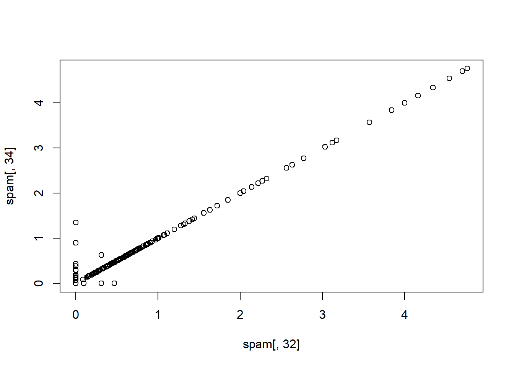
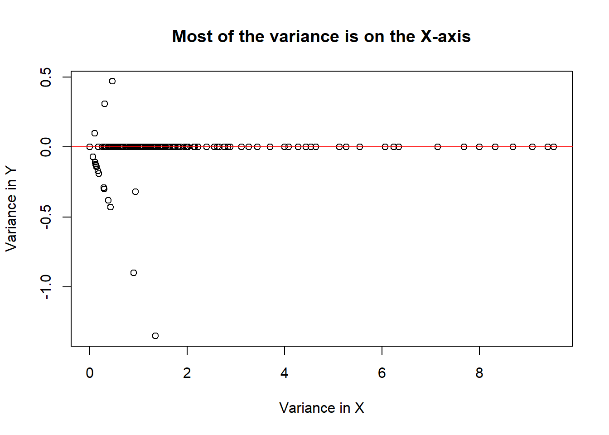
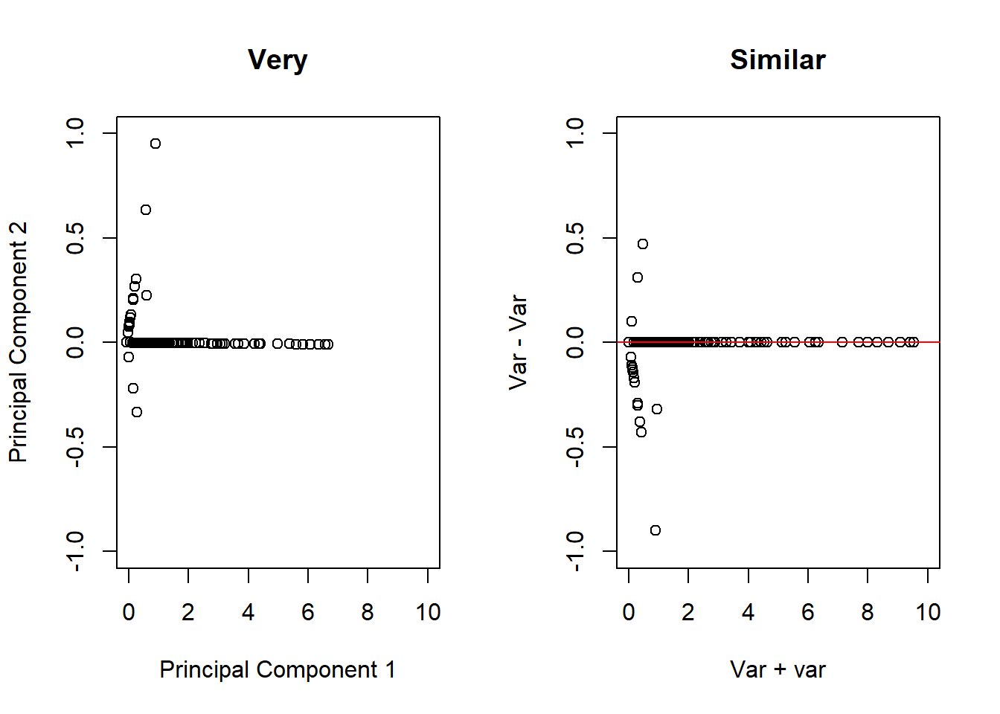
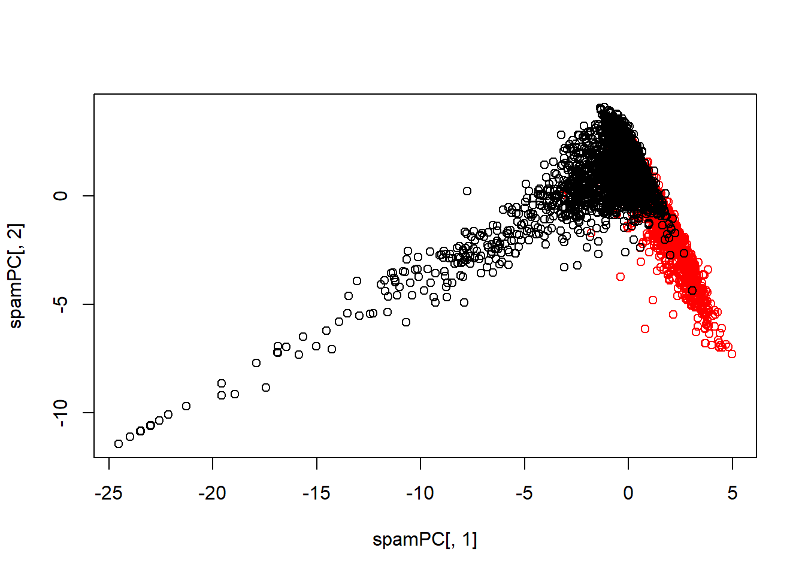

48 Preprocessing With Principal Components Analysis (PCA)
The main idea behind using PCA is to reduce the dimensionality of a dataset. Often there will be a large number of strongly correlated covariants that will not be all that different. Including more of these variables will help to explain more of the variance in training set, however to make an effective predictive model it will not be computationally efficient to analyse the entire dataset. PCA will act as a summary, as it will reduce the dimensionality of the dataset by create new covarients that aim to capture the underlying trends in the existing covariants.
set.seed(123)
# Create the training and testing sets
inTrain <- createDataPartition(y = spam$type,
p = 0.75, list = FALSE)
training <- spam[inTrain, ]
testing <- spam[-inTrain, ]
# Calculate the absolute value of the correlation between all covariants in the spam dataset
M <- abs(cor(training[, -58]))
# As all covariants have a correlation with themselves = 1, we need to remove the diagonals from the correlation matrix o prevent us removing all covariants
diag(M) <- 0
# Which of these covariants have a high correlation with eachother? We can find out using the 'which()' function
which(M > 0.85, arr.ind = T)## row col
## num415 34 32
## num857 32 34
## [1] "num857" "num415"As the two covariates above num415 and num857 are really highly correlated, it’s not necessary to include both.
48.1 Basic PCA Idea
- We might not want to look at every predictor
- A weighted combination of predictors might be better for computational efficiency
- We should pick this combination to capture the “most information” possible
- Benefits of this are:
- Reduced number of predictors
- Reduced noise in the data due to averaging out our predictors
If we add the covariates together on one axis and subtract them on another axis, we can see where most of the variance among the two covariates lies.
# Lets add the two covariates on the x axis, and subtract them on the y axis
x <- spam$num857 + spam$num415
y <- spam$num857 - spam$num415
plot(x, y, xlab = "Variance in X", ylab = "Variance in Y", main = "Most of the variance is on the X-axis")
abline(h = 0, col = "red")
This plot suggests that we should use the addition of the two covariates together instead of using them independently. This would bother reduce the amount of data used to train the model while reducing the amount of noise around our data.
48.3 Single Value Decomposition (SVD) and Principal Components Analysis (PCA)
SVD
If \(X\) is a matrix with each variable in a column and each observation in a row, then the SVD is a Matrix decomposition. \[X = UDV^T\]
Where:
- The columns of \(U\) are orthogonal (left singular vectors)
- The columns of \(V\) are orthogonal (right singular vectors)
- \(D\) is a diagonal matrix (single values)
PCA
The principal components are equal to the right singular values if you first scale (standardise) the variables.
48.4 Principal Components in R prComp
We will apply PCA to the variables from the previous example using the prcomp() function from the stats package.
# Take the two variables that are highly correlated
smallSpam <- spam[, c(34, 32)]
# Apply PCA to these variables
prComp <- prcomp(smallSpam)
par(mfrow = c(1, 2))
plot(prComp$x[,1], prComp$x[, 2], xlim = c(0,10), ylim = c(-1, 1), xlab = "Principal Component 1", ylab = "Principal Component 2", main = "Very")
plot(x, y, xlim = c(0,10), ylim = c(-1, 1), xlab = "Var + var", ylab = "Var - Var", main = "Similar")
abline(h = 0, col = "red")
# Another example of interest is the rotation matrix, wihch tells us how it sums up to two variables to get each of the principal components
prComp$rotation## PC1 PC2
## num415 0.7080625 0.7061498
## num857 0.7061498 -0.708062548.5 PCA on All Spam Data
typeColor <- ((spam$type == "spam")*1 + 1)
prComp <- prcomp(log10(spam[, -58]+1))
plot(prComp$x[, 1], prComp$x[, 2], col = typeColor, xlab = "PC1", ylab = "PC2")
48.6 PCA with Caret
PCA can be performed using function from the caret package. The preProcess() function is useful here.
# Perform PCA using the 'preProcess' function
preProc <- preProcess(log10(spam[, -58] + 1), method = "pca", pcaComp = 2)
# Use the predict function to calculate the principal components
spamPC <- predict(preProc, log10(spam[, -58] + 1))
plot(spamPC[, 1], spamPC[, 2], col = typeColor)
48.6.1 Preprocessing with PCA
- PCA can be performed using the
preProcess()function from thecaretpackage. - Training predictions can be created by using the predict function.
- A model can then be created that relates the training variable to the principal components from the training data.
# PCA can be performed on the data using the preProcess function in Caret
preProc <- preProcess(log10(training[, -58] + 1), method = "pca", pcaComp = 2)
# Training predictions can be created by using the predict function
trainPC <- predict(preProc, log10(training[, -58] + 1))
# A model can then be created that relates the training variable to the principal components. Here, the whole dataset has not been passed to the model, only the principal components from the training data.
###modelFit <- train(training$type ~ ., method = "glm", data = trainPC)
# For the test dataset, you need to use the same principal components you got from the training set, this time using the test variables. So we use the preProc object that we created using the training data, to predict variables in the test set.
testPC <- predict(preProc, log10(testing[, -58]+1))
# Finally, we can use a confusion matrix to measure the accuracy of our model
#confusionMatrix(testing$type, predict(modelFit, testPC))